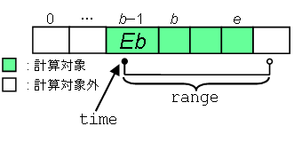

com.docomostar.system.PhysicalActivityData
com.docomostar.system.PhysicalActivityData
|
|||||||||
| 前のクラス 次のクラス | フレームあり フレームなし | ||||||||
| 概要: 入れ子 | フィールド | コンストラクタ | メソッド | 詳細: フィールド | コンストラクタ | メソッド | ||||||||
Object
public final class PhysicalActivityData
身体活動情報を表すクラスです。
このオブジェクトは1日分の身体活動量を保持しています。
身体活動量は、運動強度 [METs] に運動時間 [h] を掛けた値であるエクササイズ [Ex] で表されます。
すなわち、 1.0 [METs] の運動を 1.0 時間継続した場合の身体活動量は 1.0 [Ex] となります。
身体活動量は getExercise メソッドにより取得することができます。
このクラスにおける「1日分」とは、ネイティブ身体活動量計で管理しているタイムゾーンにおいて、当該日付の 00:00:00(00時00分00秒)から24:00:00の時間帯を指し、 00:00:00の瞬間は含み、24:00:00の瞬間は含まないものとします。
内部的には、活動量は、00:00:00から
getInterval()
秒ごとのエクササイズ値を配列(以降では、
この配列のことを内部配列と呼びます)として保持しています。
具体的には、配列の第 n 要素には、
(t * n) 秒後から
(t * (n + 1))
秒後までの活動量(エクササイズ)が格納されています。
ここで、t は getInterval() の戻り値とし、
各時間帯の右端
((t * (n + 1))秒後の瞬間)
は含まないものとします。
例えば、t = 3600(1時間)である場合は、以下のようになります。
以降では、内部配列の第 n 要素における、 活動量の計測対象となっている時間帯のことを、 単純に、内部配列の第 n 要素における計測対象時間帯 と呼ぶことにします。上記の例では、 内部配列の第1要素における計測対象時間帯は 「01:00:00から02:00:00まで(02:00:00は含まない)」 となります。
また、ネイティブ身体活動量計の利用設定がオフである間の活動量は0であるとみなされます。
| フィールドの概要 | |
|---|---|
static String |
FILTER_AEROBICS
エクササイズの抽出条件の一つで、有酸素運動によって生じたエクササイズであることを表します(="aerobics")。 |
static String |
FILTER_NONE
エクササイズの抽出条件の一つで、抽出条件がないことを表します(="none")。 |
| メソッドの概要 | |
|---|---|
String[] |
getAvailableFilter()
端末がサポートしているエクササイズの抽出条件を返します。 |
java.util.Calendar |
getCalendar()
このオブジェクトの持つ日付(タイムゾーンを含む)の Calendar オブジェクトを取得します。 |
float |
getExercise()
このオブジェクトが保持しているエクササイズの総計(1日分)を取得します。 |
float |
getExercise(java.util.Calendar time,
int range)
引数で指定した時間帯における、 エクササイズの合計を取得します。 |
float |
getExercise(java.util.Calendar time,
int range,
String filter)
抽出条件を指定して、 ある時間帯におけるエクササイズの合計を取得します。 |
float[] |
getExercise(int cycle)
このオブジェクトが保持しているエクササイズ(1日分)について、 00:00:00から指定された周期 [秒] ごとのエクササイズを配列として取得します。 |
float[] |
getExercise(int cycle,
String filter)
抽出条件を指定して、 00:00:00 から指定された周期 [秒] ごとのエクササイズを配列として取得します。 |
float |
getExercise(String filter)
抽出条件を指定して、 エクササイズの総計(1日分)を取得します。 |
int |
getInterval()
このオブジェクトが保持しているエクササイズの周期(時間間隔) [秒] を取得します。 |
| クラス Object から継承されたメソッド |
|---|
equals, getClass, hashCode, notify, notifyAll, toString, wait, wait, wait |
| フィールドの詳細 |
|---|
public static final String FILTER_NONE
エクササイズの抽出条件の一つで、抽出条件がないことを表します(="none")。
このフィールドを指定して取得したエクササイズの値は、このオブジェクトが保持しているエクササイズ全体が対象となります。
getExercise(String),
getExercise(Calendar, int, String),
getExercise(int, String),
定数フィールド値public static final String FILTER_AEROBICS
エクササイズの抽出条件の一つで、有酸素運動によって生じたエクササイズであることを表します(="aerobics")。
このフィールドを指定して取得したエクササイズの値は、このオブジェクトが保持しているエクササイズのうち有酸素運動によって生じたエクササイズのみが対象となります。 有酸素運動とみなされる条件は、機種依存です。
getExercise(String),
getExercise(Calendar, int, String),
getExercise(int, String),
定数フィールド値| メソッドの詳細 |
|---|
public java.util.Calendar getCalendar()
このオブジェクトの持つ日付(タイムゾーンを含む)の Calendar オブジェクトを取得します。
Calendar オブジェクトは、 ネイティブ身体活動量計で管理しているタイムゾーンと年月日の 00:00:00 を日時として生成されます。
このメソッドを複数回呼び出した場合、 呼び出す度に新しい Calendar インスタンスが生成され、 そのインスタンスへの参照が返されます。
public float getExercise()
public float getExercise(java.util.Calendar time,
int range)
引数で指定した時間帯における、
エクササイズの合計を取得します。

エクササイズの合計の、正確な計算方法は以下の通りです。
(b - 1) 要素が存在する場合、
その要素の計測対象時間帯が、一部だけでも、
引数で指定した時間帯に含まれるかどうかを調べます。
含まれる場合、その要素の値(エクササイズ値)を Eb とします。
含まれない場合や、当該要素が存在しない場合は、Eb は0とします。
ここで、引数で指定した時間帯は、
左端(時刻 time)を含み、
右端(time の range
秒後の時刻)は含まないものとします。
エクササイズの定義については、
このクラスの説明を参照してください。
引数で指定する時間帯は、ネイティブ身体活動量計で管理しているタイムゾーンにおいて、日付をまたがってはいけません。 そのような時間帯を指定された場合は、 日付をまたがる直前までの時間帯が指定されたものとみなされます。
指定された時間帯において、 ネイティブ身体活動量計の利用設定の状態がずっとオフであった場合には、このメソッドは0.0を返します。
引数 time に指定する Calendar オブジェクトのタイムゾーン ID は、
getCalendar() で取得した Calendar オブジェクトのタイムゾーン ID と一致しなければなりません。
time - エクササイズの合計を開始する時刻を指定します。
指定された Calendar オブジェクトの日付部分は無視されます。range - エクササイズの合計を行う範囲を秒単位で指定します。
getInterval() より小さい値を指定することはできません。
NullPointerException -
IllegalArgumentException -
IllegalArgumentException -
IllegalArgumentException -
getInterval()
よりも小さい場合に発生します。public float[] getExercise(int cycle)
このオブジェクトが保持しているエクササイズ(1日分)について、
00:00:00から指定された周期 [秒]
ごとのエクササイズを配列として取得します。
ある一定周期ごとのエクササイズの推移を調べたい時に便利です。
例えば、1時間周期のグラフを作成したい場合には
getExercise(3600) を呼び出してください。
正確には、戻り値として得られる配列の 第 n 要素には下記の値 value が格納されています。
Date date = getCalendar().getTime(); date.setTime(date.getTime() + cycle * 1000 * n); Calendar calendar = Calendar.getInstance(getCalendar().getTimeZone()); calendar.setTime(date); float value = getExercise(calendar, cycle);
上記定義からも分かるように、引数 cycle には、getInterval()
の倍数を指定するようにしてください。
そうでない値を cycle に指定した場合には、
配列の各要素に格納されるエクササイズの値が不均一なってしまうので注意が必要です。
cycle - 周期を秒単位で指定します。
getInterval()
よりも小さい値を指定することはできません。
IllegalArgumentException -
getInterval()
よりも小さい場合に発生します。public float getExercise(String filter)
抽出条件を指定して、 エクササイズの総計(1日分)を取得します。
引数 filter に FILTER_NONE を指定した場合の振る舞いは、
getExercise() と同様です。
引数 filter に FILTER_NONE 以外を指定した場合、
抽出条件を満たしたエクササイズの総計を返します。
それ以外の振る舞いは、 getExercise() と同様です。
引数 filter に設定することが可能な抽出条件は、
getAvailableFilter() を用いて調べることができます。
filter - エクササイズの抽出条件を指定します。
FILTER_NONE,
FILTER_AEROBICS
NullPointerException -
IllegalArgumentException -
public float getExercise(java.util.Calendar time,
int range,
String filter)
抽出条件を指定して、 ある時間帯におけるエクササイズの合計を取得します。
引数 filter に FILTER_NONE を指定した場合の振る舞いは、
getExercise(Calendar,int) と同様です。
引数 filter に FILTER_NONE 以外を指定した場合、
抽出条件を満たしたエクササイズを返します。
それ以外の振る舞いは、 getExercise(Calendar,int) と同様です。
引数 filter に設定することが可能な抽出条件は、
getAvailableFilter() を用いて調べることができます。
time - エクササイズの合計を開始する時刻を指定します。
指定された Calendar オブジェクトの日付部分は無視されます。range - エクササイズの合計を行う範囲を秒単位で指定します。
getInterval() より小さい値を指定することはできません。filter - エクササイズの抽出条件を指定します。
FILTER_NONE,
FILTER_AEROBICS
NullPointerException -
IllegalArgumentException -
IllegalArgumentException -
IllegalArgumentException -
getInterval()
よりも小さい場合に発生します。
IllegalArgumentException -
public float[] getExercise(int cycle,
String filter)
抽出条件を指定して、 00:00:00 から指定された周期 [秒] ごとのエクササイズを配列として取得します。
引数 filter に FILTER_NONE を指定した場合の振る舞いは、
getExercise(int) と同様です。
引数 filter に FILTER_NONE 以外を指定した場合、
抽出条件を満たしたエクササイズを返します。
それ以外の振る舞いは、 getExercise(int) と同様です。
引数 filter に設定することが可能な抽出条件は、
getAvailableFilter() を用いて調べることができます。
getExercise(Calendar,int) 縺ｨ蜷梧ｧ倥〒縺吶